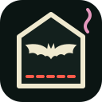

- 18espécies de morcegos na região
- 2feixes infravermelhos contam entradas e saídas
- LoRarádio que envia o resumo a cada 30 minutos
- ~9 diasde bateria, trocada toda semana

Um abrigo com o cheiro das plantas que os morcegos comem consegue trazê-los de volta para a mata em recuperação?
Projeto de Inovação da FIRST LEGO League 2026 · Mata de Santa Genebra, Campinas (SP)